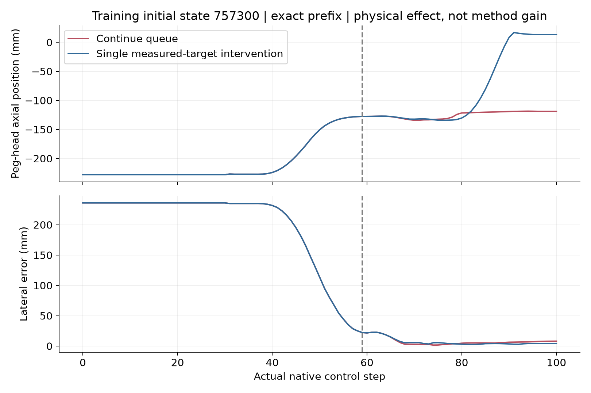
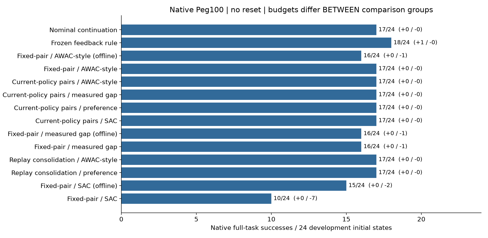

独立方法增益：UNVERIFIED。不是实机结果；原生 Peg100；无交接重置。
616 次完整任务 · 61,600 物理步 · 9,480 Actor/Critic 更新 · 24 个新开发初态（现已看过）
完整结论与限制 · 实际成本 · 原始归档与SHA · 复现
偏好训练学会了有效的第一个干预，但同时改变后续动作，最终仍失败。成功证据与学习策略的前69个物理步完全一致，之后额外重规划改变结果。不能将动作学会或损失下降当作完整任务增益。

上图为训练案例的物理干预效应，不是新算法的独立开发成绩。
同一比较组内匹配预算；不同组的数据、交互和更新预算不同。全部最终模型为预定终点，不取最优检查点。单个继承初始化。
| 方法 / 阶段 | 成功 | 救回 / 退化 |
|---|---|---|
| zero_suffix | 17/24 | 0 / 0 |
| budget_refine_zplus | 18/24 | 1 / 0 |
| awac/offline_eval | 16/24 | 0 / 1 |
| awac/final_eval | 17/24 | 0 / 0 |
| current_awac/final_eval | 17/24 | 0 / 0 |
| current_measured_gap/final_eval | 17/24 | 0 / 0 |
| current_measured_preference/final_eval | 17/24 | 0 / 0 |
| current_sac/final_eval | 17/24 | 0 / 0 |
| measured_gap/offline_eval | 16/24 | 0 / 1 |
| measured_gap/final_eval | 16/24 | 0 / 1 |
| memory_awac/final_eval | 17/24 | 0 / 0 |
| memory_measured_preference/final_eval | 17/24 | 0 / 0 |
| sac/offline_eval | 15/24 | 0 / 2 |
| sac/final_eval | 10/24 | 0 / 7 |
